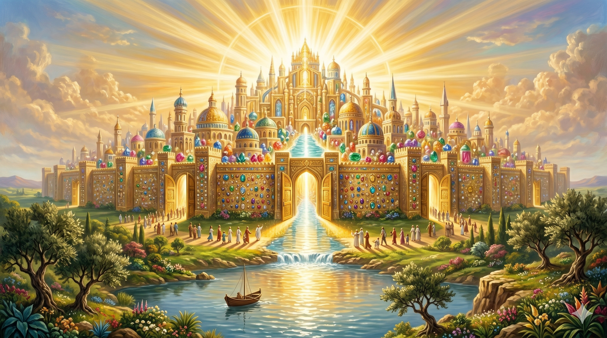

노인 사도 요한이 밧모 섬 절벽 끝에 무릎을 꿇고 두 손을 모은 채 경이로운 눈으로 하늘을 올려다보는 장면 — 그의 앞에 광활하게 펼쳐지는 새 예루살렘의 환상, 하늘에서 보석처럼 빛나는 도성이 황금빛 구름 사이로 내려오고 있다
"또 내가 새 하늘과 새 땅을 보니 처음 하늘과 처음 땅이 없어졌고 바다도 다시 있지 않더라 또 내가 보매 거룩한 성 새 예루살렘이 하나님께로부터 하늘에서 내려오니 그 준비한 것이 신부가 남편을 위하여 단장한 것 같더라 내가 들으니 보좌에서 큰 음성이 나서 이르되 보라 하나님의 장막이 사람들과 함께 있으매 하나님이 그들과 함께 계시리니 … 모든 눈물을 그 눈에서 닦아 주시니 다시는 사망이 없고 애통하는 것이나 곡하는 것이나 아픈 것이 다시 있지 아니하리니 처음 것들이 다 지나갔음이러라" — 요한계시록 21:1–4
요한계시록 21장은 성경 전체의 종착점입니다. 창세기 1장에서 시작된 하나님의 창조 이야기가 여기서 마침내 완성됩니다. "처음 하늘과 처음 땅이 없어졌고" — 이것은 단순한 소멸이 아니라 새로운 창조의 시작을 알리는 선언입니다. 새 하늘과 새 땅은 전혀 다른 세계가 아니라, 이 세계가 완전히 회복되고 갱신된 모습입니다. 하나님의 구원은 영혼만의 구원이 아니라 온 피조 세계의 회복임을 보여줍니다.
그 환상의 중심에는 눈물을 닦아 주시는 하나님의 손이 있습니다. "모든 눈물을 그 눈에서 닦아 주시니" — 이것이 새 하늘과 새 땅의 첫 번째 장면입니다. 화려한 성전도, 위엄 넘치는 왕좌도 아닌, 하나님이 직접 한 사람 한 사람의 눈물을 닦아 주시는 장면. 요한은 밧모 섬 유배지에서 이 환상을 보았습니다. 박해받는 성도들에게 이 환상을 전해야 한다는 소명을 받은 노인은, 자신이 평생 목격하고 써 내려온 이야기가 결국 이 결말로 향하고 있음을 알았을 것입니다.

황금빛으로 빛나는 새 예루살렘 성 — 거대한 성벽이 보석처럼 빛나고, 성문은 활짝 열려 있으며, 성 안에서 강처럼 흘러나오는 생명수 빛이 성 밖을 환하게 비춘다. 처음 것들이 다 지나가고 도래한 완전한 회복의 세계
요한이 이 환상을 기록한 것은 미래의 신기한 광경을 구경시키기 위해서가 아니었습니다. 지금 이 순간 고통받고 있는 사람들에게 소망을 주기 위해서였습니다. "다시는 사망이 없고 애통하는 것이나 곡하는 것이나 아픈 것이 다시 있지 아니하리니" — 이 약속이 오늘 당신의 슬픔과 고통을 부정하지 않습니다. 오히려 그것이 결코 마지막이 아님을 선언합니다.
예수님과 함께한 첫날 "와 보라"는 초청을 따라갔던 청년 요한이, 이제 온 세상을 향해 말합니다. "와 보라 — 이 모든 것의 끝이 얼마나 아름다운지." 우리가 이 땅에서 감당하는 수고와 눈물은 이 결말을 향해 흘러가고 있습니다. 오늘 하루를 그 소망 위에 세우십시오.
지금 흘리는 눈물은 영원하지 않습니다.
하나님이 직접 그 눈물을 닦아 주실 날이 반드시 옵니다.
그 소망이 오늘 당신의 발걸음을 붙들게 하십시오.